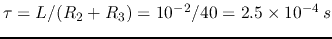
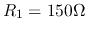
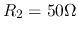
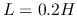
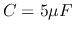
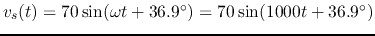
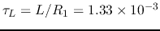
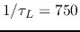
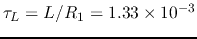
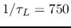

Solution:

Solution:

In the circuit below, , , , .
The input voltage is
.
The system is in steady state before the switch is closed at  . Find voltage
. Find voltage
 across
across  and current
and current  through
through  for .
for .

Solution:
The phasor form of the input voltage is:
For , the switch is closed,
 ,
,
 ,
, .
As the steady state of
,
, .
As the steady state of  is zero, we can find
is zero, we can find  to be
to be